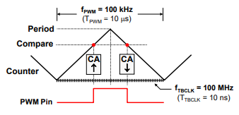

Enhanced Pulse Width Modulation (ePWM)#
The C2000 high-performance control peripherals are an integral component for all digital control systems. This module will cover pulse width modulation (PWM).
What is pulse width modulation?#
Pulse width modulation (PWM) is a method for representing an analog signal with a digital approximation. The PWM signal consists of a sequence of variable width, constant amplitude pulses which contain the same total energy as the original analog signal.
This property is valuable in digital motor control as sinusoidal current (energy) can be delivered to the motor using PWM signals applied to the power converter. Although energy is input to the motor in discrete packets, the mechanical inertia of the rotor acts as a smoothing filter. Dynamic motor motion is therefore similar to having applied the sinusoidal currents directly.
PWM is a scheme to represent a signal as a sequence of pulses: * Fixed carrier frequency * Fixed pulse amplitude * Pulse width proportional to instantaneous signal amplitude * PWM energy ~ original signal energy
Why use PWM with Power Switching Devices?#
Power switching devices can be difficult to control when operating in the proportional region, but are easy to control in the saturation and cutoff regions. Since PWM is a digital signal by nature and easy for an MCU to generate, it is ideal for use with power switching devices. Essentially, PWM performs a DAC function, where the duty cycle is equivalent to the DAC analog amplitude value.
The ePWM Module#
The ePWM modules are highly programmable, extremely flexible, and easy to use, while being capable of generating complex pulse width waveforms with minimal CPU overhead or intervention. Each ePWM module is identical with two PWM outputs, EPWMxA and EPWMxB, and multiple modules that can be synchronized to operate together as required by the system application design. The generated PWM waveforms are available as outputs on the GPIO pins. Additionally, the EPWM module can generate ADC start of conversion signals and generate interrupts to the PIE block. External trip zone signals can trip the output, as well as generate interrupts. The outputs of the comparators are used as inputs to the ePWM X-Bar.
Note:
The order in which the ePWM modules are connected is determined by the device synchronization scheme.
Various ePWM modules (and eCAP units) can be grouped together for synchronization.
The ePWM module consists of eight submodules: time-base, counter-compare, action-qualifier, dead-band generator, PWM chopper, trip-zone, digital-compare, and event-trigger.
ePWM Time-Base Sub-Module#
The time-base submodule consists of a dedicated 16-bit counter, along with built-in synchronization logic to allow multiple ePWM modules to work together as a single system.
A clock pre-scaler divides the EPWM clock to the counter and a period register is used to control the frequency and period of the generated waveform.
Calculations:
TBCLK= EPWMCLK / (HSPCLKDIV * CLKDIV)Clock Prescaler = HSPCLKDIV * CLKDIV
The period register has a shadow register, which acts like a buffer to allow the register updates to be synchronized with the counter, thus avoiding corruption or spurious operation from the register being modified asynchronously by the software.
The time-base counter operates in three modes:up-count,down-count, and up-down-count.
In up-count mode the time-base counter starts counting from zero and increments until it reaches the period register value, then the time-base counter resets to zero and the count sequence starts again.
In down-count mode the time-base counter starts counting from the period register value and decrements until it reaches zero, then the time-base counter is loaded with the period value and the count sequence starts again.
In up-down-count mode the time-base counter starts counting from zero and increments until it reaches the period register value, then the timebase counter decrements until it reaches zero and the count sequence repeats. The up-count and down-count modes are used to generate asymmetrical waveforms, and the up-down-count mode is used to generate symmetrical waveforms.
Synchronization
Synchronization allows multiple ePWM modules to work together as a single system. The synchronization is based on a synch-in signal. Additionally, the waveform can be phase-shifted.
ePWM Compare Sub-Module#
The counter-compare submodule continuously compares the time-base count value to four counter compare registers (CMPA, CMPB, CMPC, and CMPD) and generates four independent compare events (i.e. time-base counter equals a compare register value) which are fed to the action-qualifier and event-trigger submodules.
The counter compare registers are shadowed to prevent corruption or glitches during the active PWM cycle.
Typically CMPA and CMPB are used to control the duty cycle of the generated PWM waveform
All four compare registers can be used to start an ADC conversion or generate an ePWM interrupt.
For the up-count and down count modes, a counter match occurs only once per cycle, however for the up-down-count mode a counter match occurs twice per cycle since there is a match on the up count and down count.
The above ePWM Compare Event Waveform diagram shows the compare matches which are fed into the action qualifier. Notice that with the count up and count down mode, there are matches on the up-count and down-count.
ePWM Action Qualifier Sub-Module#
The action-qualifier submodule is the key element in the ePWM module which is responsible for constructing and generating the switched PWM waveforms. It utilizes match events from the time-base and counter-compare submodules for performing actions on the EPWMxA and EPWMxB output pins. These first three submodules are the main blocks which are used for generating a basic PWM waveform.
ePWM Action Qualifier Actions
Tx Event Sources = DCAEVT1, DCAEVT2, DCBEVT1, DCBEVT2, TZ1, TZ2, TZ3, EPWMxSYNCIN
The Action Qualifier actions are setting the pin high, clearing the pin low, toggling the pin, or do nothing to the pin, based independently on count-up and count-down time-base match event.
The match events occur when the time-base counter equals the period register value, the time-base counter is zero, the time-base counter equals CMPA, the time-base counter equals CMPB, or for a Trigger event (T1 and T2) based on a comparator, trip, or sync signal.
Note that zero and period actions are fixed in time, whereas CMPA and CMPB actions are moveable in time by programming their respective registers. Actions are configured independently for each output using shadowed registers, and any or all events can be configured to generate actions on either output. Also, the output pins can be forced to any action using software.
The next few figures show how the setting of the action qualifier with the compare matches are used to modulate the output pins.
Notice that the output pins for EPWMA and EPWMB are completely independent. In the figure above, the EPWMA output is being set high on the zero match and cleared low on the compare A match. The EPWMB output is being set high on the zero match and cleared low on the compare B match.
In the figure above, the EPWMA output is being set high on the compare A match and being cleared low on the compare B match, while the EPWMB output is being toggled on the zero match.
In the figure above, there are different output actions on the up-count and down-count using a single compare register. The EPWMA and EPWMB outputs are being set high on the compare A and B up-count matches and cleared low on the compare A and B down-count matches.
And finally in the figure above, again using different output actions on the up-count and down count, the EPWMA output is being set high on the compare A up-count match and being cleared low on the compare B down-count match. The EPWMB output is being cleared low on the zero match and being set high on the period match.
Asymmetric and Symmetric Waveform Generation using the ePWM#
PWM Switching Frequency:
The PWM carrier frequency is determined by the value contained in the time-base period register, and the frequency of the clocking signal. The value needed in the period register is:
Asymmetric PWM
Period register = (switching period/ timer period) -1
Period register = (Tpwm / TTBCLK) -1
Symmetric PWM
Period register = switching period/ 2(timer period)
Period register = Tpwm / (2 * TTBCLK)
Notice that in the symmetric case, the period value is half that of the asymmetric case. This is because for up/down counting, the actual timer period is twice that specified in the period register (i.e. the timer counts up to the period register value, and then counts back down).
PWM Resolution:
The PWM compare function resolution can be computed once the period register value is determined. The largest power of 2 that is less than (or close to) the period value is used for the function resolution. As an example, if asymmetric was 1000, and symmetric was 500, then:
Asymmetric PWM: approx. 10 bit resolution since 2^10 = 1024, approximately equal to 1000
Symmetric PWM: approx. 9 bit resolution since 2^9 = 512, approximately equal to 500
PWM Duty Cycle:
Duty cycle calculations are used to define where CMP registers are set. These calculations are simple, provided one remembers that the PWM signal is initially inactive during any particular timer period, and becomes active after the (first) compare match occurs. The timer compare register should be loaded with the value as follows:
Asymmetric PWM:
CMPX= (100% - duty cycle)∗TBPRDSymmetric PWM:
CMPX= (100% - duty cycle)∗TBPRD
Note:
For symmetric PWM, the desired duty cycle is only achieved if the compare registers contain the computed value for both the up-count compare and down-count compare portions of the time-base period.
PWM Computation Example#
Symmetric PWM Computation Example
Determine TBPRD and CMPA for 100 kHz, 25% duty symmetric PWM from a 100 MHz time base clock

TBPRD = .5* (FTBCLK/FPWM) = .5(100 MHz/ 100 kHz) = 500
CMPA = (100% - duty cycle) TBPRD = 0.75 * 500=375
Asymmetric PWM Computation Example
Determine TBPRD and CMPA for 100 kHz, 25% duty asymmetric PWM from a 100 MHz time base clock
TBPRD = (FTBCLK/FPWM) -1 = (100 MHz/ 100 kHz) -1 = 999
CMPA = (100% - duty cycle) (TBPRD +1) -1 = 0.75 * (999 + 1) -1 = 749
ePWM Dead-Band Sub-Module#
The dead-band sub-module provides a means to delay the switching of a gate signal, thereby allowing time for gates to turn off and preventing a short circuit.
This sub-module supports independently programmable rising-edge and falling-edge delays with various options for generating the appropriate signal outputs on EPWMxA and EPWMxB.
Motivation for Dead-Band
Transistor gates turn on faster than they shut off
Short circuit if both gates are on at the same time
To explain further, power-switching devices turn on faster than they shut off. This issue would momentarily provide a path from supply rail to ground, giving us a short circuit. The dead-band sub-module alleviates this issue.
Dead-band control provides a convenient means of combating current shoot-through problems in a power converter. Shoot-through occurs when both the upper and lower gates in the same phase of a power converter are open simultaneously. This condition shorts the power supply and results in a large current draw. Shoot-through problems occur because transistors open faster than they close, and because high-side and low-side power converter gates are typically switched in a complimentary fashion. Although the duration of the shoot-through current path is finite during PWM cycling, (i.e. the closing gate will eventually shut), even brief periods of a short circuit condition can produce excessive heating and overstress in the power converter and power supply.
Two basic approaches exist for controlling shoot-through:
Modify the transistors
The opening time of the transistor gate must be increased so that it (slightly) exceeds the closing time. One way to accomplish this is by adding a cluster of passive components such as resistors and diodes in series with the transistor gate, as shown in the image below.
The resistor acts to limit the current rise rate towards the gate during transistor opening, thus increasing the opening time. When closing the transistor however, current flows unimpeded from the gate via the by-pass diode and closing time is therefore not affected. While this passive approach offers an inexpensive solution that is independent of the control microprocessor, it is imprecise, the component parameters must be individually tailored to the power converter, and it cannot adapt to changing system conditions.
Modify the PWM gate signals controlling the transistors
This approach separates transitions on complimentary PWM signals with a fixed period of time. This is called dead-band. While it is possible to perform software implementation of dead-band, the C28x offers on-chip hardware for this purpose that requires no additional CPU overhead. Compared to the passive approach, dead-band offers more precise control of gate timing requirements. In addition, the dead time is typically specified with a single program variable that is easily changed for different power converters or adapted on-line.
ePWM Chopper Sub-Module#
The PWM chopper submodule is used with pulse transformer-based gate drives to control the power switching devices.
This submodule modulates a high-frequency carrier signal with the PWM waveform that is generated by the action-qualifier and dead-band submodules.
Programmable options are available to support the magnetic properties and characteristics of the transformer and associated circuitry.
Shown in the figure below, a high-frequency carrier signal is ANDed with the ePWM outputs. Also, this circuit provides an option to include a larger, one-shot pulse width before the sustaining pulses.
ePWM Trip-Zone and Digital Compare Sub-Modules#
The trip zone and digital compare sub-modules provide a protection mechanism to protect the output pins from abnormalities, such as over-voltage, over-current, and excessive temperature rise.
Trip Zone Features:
Trip-Zone has a fast, clock-independent logic path to high-impedance the EPWMxA/B output pins
Interrupt latency may not protect hardware when responding to over current conditions or short-circuits through ISR software
Supports:
One-shot trip for major short circuits or over current conditions
Cycle-by-cycle trip for current limiting operation
The trip-zone submodule utilizes a fast clock-independent logic mechanism to quickly handle fault conditions by forcing the EPWMxA and EPWMxB outputs to a safe state, such as high, low, or high-impedance, thus avoiding any interrupt latency that may not protect the hardware when responding to over current conditions or short circuits through ISR software.
The submodule supports one-shot trips for major short circuits or over current conditions, and cycle-by-cycle trips for current limiting operation.
The trip-zone signals can be generated externally from any GPIO pin which is mapped through the Input X-Bar (TZ1 – TZ3), internally from an inverted eQEP error signal (TZ4), system clock failure (TZ5), or from an emulation stop output from the CPU (TZ6). Additionally, numerous trip-zone source signals can be generated from the digital-compare subsystem.
The power drive protection is a safety feature that is provided for the safe operation of systems such as power converters and motor drives. It can be used to inform the monitoring program of motor drive abnormalities such as over-voltage, over-current, and excessive temperature rise. If the power drive protection interrupt is unmasked, the PWM output pins will be put in a safe state immediately after the pin is driven low. An interrupt will also be generated.
The digital compare submodules receive their trip signals from the Input X-BAR and ePWM XBAR.
ePWM X-Bar
The ePWM X-BAR is used to route various internal and external signals to the ePWM modules. Eight trip signals from the ePWM X-BAR are routed to all of the ePWM modules.
The ePWM X-BAR architecture block diagram shown below is replicated 8 times. The ePWM XBAR can select a single signal or logically OR up to 32 signals. The table in the figure defines the various trip sources that can be multiplexed to the trip-zone and digital compare submodules.

Purpose of the Digital Compare Sub-Module
Generates ‘compare’ events that can:
Trip the ePWM
Generate a Trip interrupt
Sync the ePWM
Generate an ADC start of conversion
Digital compare module inputs are:
Input X-Bar
ePWM X-Bar
Trip-zone input pins
A compare event is generated when one or more of its selected inputs are either high or low
Optional ‘Blanking’ can be used to temporarily disable the compare action in alignment with PWM switching to eliminate noise effects
Digital Compare Sub-Module Signals
The digital-compare subsystem compares signals external to the ePWM module, such as a signal from the CMPSS analog comparators, to directly generate PWM events or actions which are then used by the trip-zone, time-base, and event-trigger submodules.
These ‘compare’ events can trip the ePWM module, generate a trip interrupt, sync the ePWM module, or generate an ADC start of conversion. A compare event is generated when one or more of its selected inputs are either high or low. The signals can originate from any external GPIO pin which is mapped through the Input X-Bar and from various internal peripherals which are mapped through the ePWM X-Bar.
Additionally, an optional ‘blanking’ function can be used to temporarily disable the compare action in alignment with PWM switching to eliminate noise effects.
Digital Compare Events
The user selects the input for each of DCAH, DCAL, DCBH, DCBL
Each A and B compare uses its corresponding DCyH/L inputs (y = A or B) The user selects the signal state that triggers each compare from the following choices:
ePWM Event-Trigger Sub-Module#
The event-trigger submodule manages the events generated by the time-base, counter-compare, and digital-compare submodules to generate an interrupt to the CPU and/or a start of conversion pulse to the ADC when a selected event occurs.
These event triggers can occur when the time-base counter equals zero, period, zero or period, the up/down count match of a compare register.
Recall that the digital-compare subsystem can also generate an ADC start of conversion based on one or more compare events. Notice counter up and down are independent and separate.
The event-trigger submodule also incorporates pre-scaling logic to issue an interrupt request or ADC start of conversion at every event or up to every fifteenth event.
Resources#
High Resolution PWM (HRPWM)#
The ePWM module is capable of significantly increasing its time resolution capabilities over the standard conventionally derived digital PWM. This is accomplished by adding 8-bit extensions to the counter compare register (CMPxHR), period register (TBPRDHR), and phase register(TBPHSHR), providing a finer time granularity for edge positioning control. This is known as high-resolution PWM (HRPWM) and it is based on micro edge positioner (MEP) technology.
The MEP logic is capable of positioning an edge very finely by sub-dividing one coarse system clock of the conventional PWM generator with time step accuracy on the order of 150 picoseconds. A self-checking software diagnostics mode is used to determine if the MEP logic is running optimally, under all operating conditions such as for variations caused by temperature, voltage, and process. HRPWM is typically used when the PWM resolution falls below approximately 9 or 10 bits.
Significantly increases the resolution of conventionally derived digital PWM
Adds 8-bit extensions to Compare registers (CMPxHR), Period register (TBPRDHR) and Phase register (TBPHSHR) for edge positioning control
Typically used when PWM resolution falls below ~9-10 bits
Note:
Not all ePWM outputs support the HRPWM feature (see device datasheet)
Feedback
Please provide any feedback you may have about the content within C2000 Academy to: c2000_academy_feedback@list.ti.com